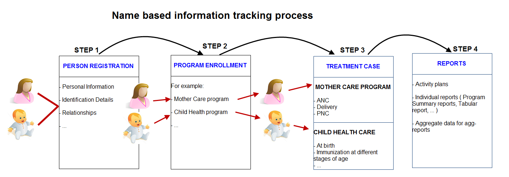

Example 26.2.
Working process of Mother and child health program
|  |
Create new or find existing TEI.
You can search on defined attributes, for example name or address.
Enroll TEI in a program.
Based on the services of the program by the time, the app creates an activity plan for the TEI.
The TEI is provided with various services depending on the program. All services are recorded.
Use information about the individual cases to create reports.